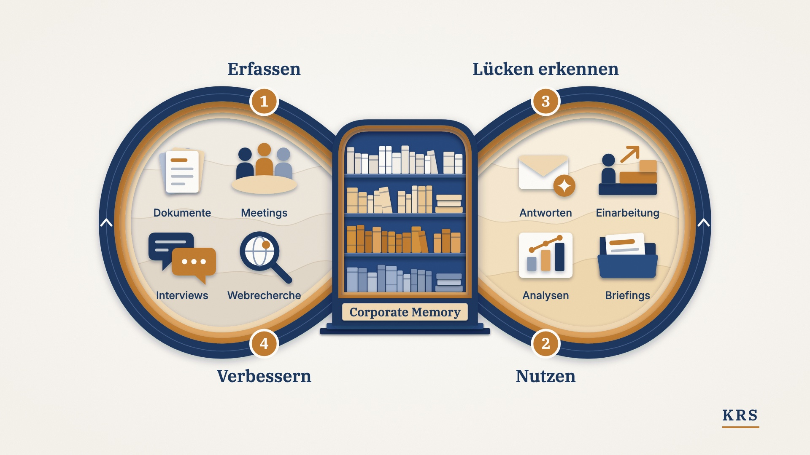
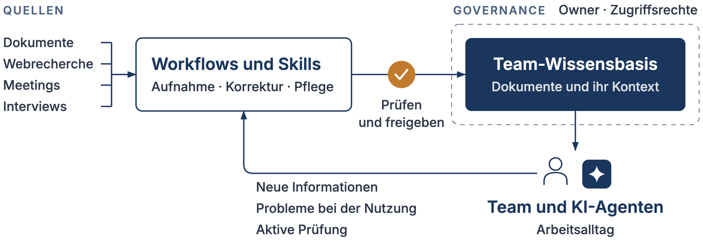
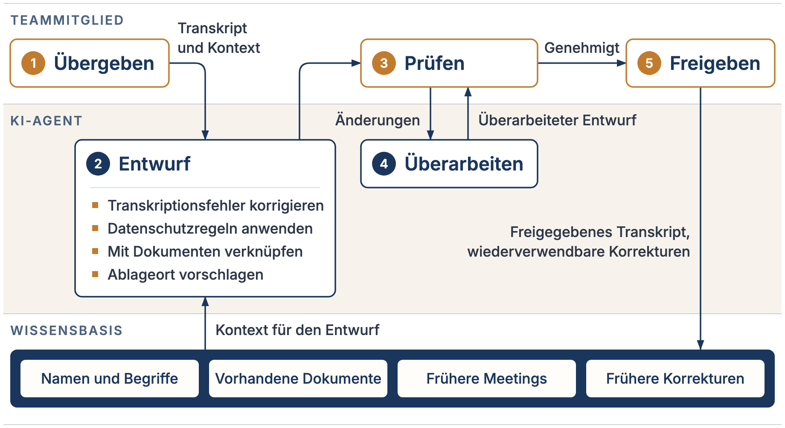
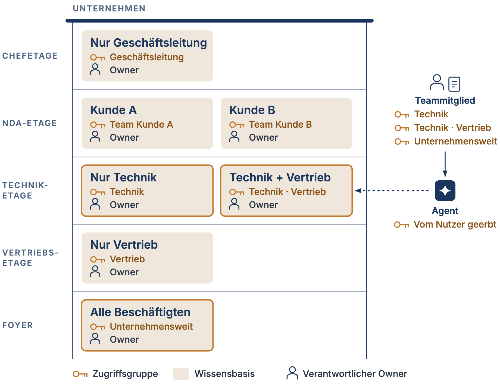

Ein Corporate Memory System skalieren
Woraus ein Corporate Memory System besteht, wie ein Team es aufbaut und aktuell hält und wie der Ansatz mit klarer Governance auf weitere Teams übertragen wird.

Zuerst erschienen auf LinkedIn (Englisch). Für die Website übersetzt.

KI verändert, wie Organisationen Wissen sammeln und nutzen. Sie ermöglicht Suchen in natürlicher Sprache über große Dokumentbestände und macht es praktikabel, laufend festzuhalten, wie Experten denken und abwägen, was früher nie aufgeschrieben wurde. Als gemeinsamer Kontext hilft dieses Wissen Menschen und KI, besser und schneller zu arbeiten und nützliche Aufgaben anzugehen, die bisher zu aufwendig waren.
Große Anbieter wie Anthropic, OpenAI und Microsoft bieten in ihren KI-Assistenten bereits ein Gedächtnis an. Das zeigt, wie wertvoll dauerhafter Kontext für die wirksame Arbeit mit KI ist. Ein Corporate Memory System überträgt dieses Prinzip auf das gemeinsame Wissen von Teams, mit Kontrolle der Organisation über Zugriff und Pflege und mit einem herstellerunabhängigen Aufbau auf Basis offener Formate. Es führt die Informationen, die für die tägliche Arbeit eines Teams wichtig sind, in einer gemeinsamen, gepflegten Wissensbasis zusammen, die Menschen und KI nutzen können. In einer Organisation umfasst es viele solcher Wissensbasen.
Der Ansatz richtet sich an Organisationen, deren Wissen über Dokumente, Meetings und die Erfahrung einzelner Menschen verteilt ist und noch nicht zusammengeführt wurde. Dieser Artikel beschreibt die Bestandteile eines solchen Systems, wie ein Team es aufbaut und aktuell hält, wie das System auf weitere Teams ausgerollt wird und wie sich die Governance organisieren lässt. Der letzte Abschnitt beschreibt unseren Ansatz und die Rolle von Knowledge Retention Solutions (KRS).
Die Bestandteile eines Corporate Memory Systems
Ein Corporate Memory System verbindet drei Bestandteile:
- Wissensbasen: Dokumente, Webrecherche, Meetings und Interviews.
- Wiederverwendbare Workflows und KI-Skills: Verfahren, um neue Informationen aufzunehmen und vorhandenes Wissen zu korrigieren und zu pflegen, sowie die schriftlichen Anweisungen, nach denen ein KI-Agent sie ausführt.
- Governance: Zuständigkeiten, Zugriffsrechte und Regeln dafür, wie Wissen geändert und geteilt wird.
Abbildung 1 zeigt, wie diese Bestandteile zusammenwirken.


Eine Wissensbasis verbindet Dokumente mit dem Kontext, den man braucht, um sie zu verstehen und anzuwenden. Dazu gehören Erfahrung und Entscheidungsgründe, die in Interviews und Gesprächen erfasst werden: warum eine Wahl so getroffen wurde, welche Warnzeichen wichtig waren oder wann eine Ausnahme nötig war. Zusätzliche Aufbereitung kann dieses Wissen nützlicher machen. Document Twins ergänzen Originaldateien um Textbeschreibungen, etwa der Grafiken einer Präsentation oder der Logik und Annahmen einer Tabellenkalkulation. Übersichtsdokumente und Themenleitfäden verbinden Material aus Dokumenten und Interviews zu zusammenhängenden Erklärungen. Die Originalinhalte der Quellen und spätere Erläuterungen bleiben unterscheidbar und nachvollziehbar.
Einführung und Skalierung
Die Einführung hat zwei Phasen: Der Erstaufbau schafft eine erste nützliche Wissensbasis. Laufende Nutzung und Pflege halten sie aktuell, erweitern ihren Umfang und machen sie mit der Zeit nützlicher.
Skalieren heißt, beide Phasen so anzulegen, dass sie sich in vielen Teams effizient wiederholen lassen: mit wiederverwendbaren Workflows für Aufbau und Pflege von Wissensbasen, praxisnahem Schulungsmaterial und einem internen Support-Team. Wenn mehr Teams mitmachen, muss Wissen auch über Teamgrenzen hinweg geteilt werden. Die Governance legt fest, welche Information in welche Wissensbasis gehört, wer dafür verantwortlich ist, wer darauf zugreifen darf und wie dieser Zugriff verwaltet wird.
Phase A: Erstaufbau
1. Umfang und Zuständigkeiten festlegen. Jede Wissensbasis braucht einen klaren Umfang: welche Arten von Dokumenten und Arbeit hineingehören und was nicht. Der Umfang kann sich an einem Team, einem Projekt oder einem Thema orientieren. Bei einem Team sind seine Hauptaufgaben ein guter Ausgangspunkt, um ihn festzulegen. Steht diese Grenze fest, vereinbart das Team, wer Informationen einbringt und aufbereitet, wer sie lesen oder ändern darf und wer als Owner die Gesamtverantwortung für die Wissensbasis übernimmt und erster Ansprechpartner ist.
2. Kontext sammeln und die Wissensbasis aufbauen. Damit eine Wissensbasis nützlich wird, braucht sie eine kritische Masse an Informationen. Dazu sammelt man die vorhandenen Dokumente, die in ihren Umfang fallen, ergänzt bei Bedarf externe Recherche und schließt die Lücken mit Interviews mit Experten oder Kollegen, mit Interviews, die ein KI-Agent führt, mit angeleiteten Selbstaufnahmen und mit Meeting-Transkripten. Danach wird das Material aufbereitet und für die Nutzung geprüft. Ein brauchbarer Maßstab dafür, wann es genug ist, ist das, was ein neuer Kollege für seine Einarbeitung bräuchte. Gezielte Experteninterviews können den Start beschleunigen. Laufende Beiträge erweitern das Wissen dann, während das Team arbeitet.
3. Nutzen an echten Aufgaben zeigen. Menschen investieren nur dann Zeit in die Pflege einer Wissensbasis, wenn sie ihnen bei der täglichen Arbeit spürbar hilft. Nutzen Teammitglieder sie mit KI für ihre eigenen Aufgaben, etwa um einen Kundenpitch vorzubereiten, eine Konstruktionsfrage zu beantworten oder einen neuen Kollegen einzuarbeiten, zeigt sich dieser Nutzen meist schnell. Oft sehen sie zum ersten Mal, wie hilfreich ein KI-Agent wird, wenn er auf den vollständigen Kontext ihrer Arbeit zugreifen kann und sie nicht mehr alles selbst erklären müssen. Sie müssen auch sehen, dass Beitragen einfach ist: Eine Lücke oder ein Fehler lässt sich direkt mit dem Agenten melden und beheben.
Der Erstaufbau ist abgeschlossen, wenn das Team Zugriff auf die Wissensbasis hat, sie an echten Aufgaben genutzt hat, weiß, wie es Rückmeldungen gibt, und jemand für deren Bearbeitung zuständig ist.
Phase B: Laufende Nutzung und Pflege
Hat das Team den Nutzen der Wissensbasis erlebt und will es sie weiter nutzen, muss es die Pflege selbst in die Hand nehmen: entscheiden, was hinzukommt, aktualisiert wird oder wegfällt, und lernen, die wesentlichen Workflows selbstständig auszuführen. Am Anfang steht die Vereinbarung, welche Quellen es laufend erfasst, insbesondere Wissen, das nicht aufgeschrieben ist, und welche Routinen die Wissensbasis aktuell halten.
Zwei Arten von Workflows decken die wesentlichen Tätigkeiten ab:
| Art des Workflows | Was er leisten muss |
|---|---|
| Neue Informationen aufnehmen | Neue Quellen und Erläuterungen aufbereiten, mit dem vorhandenen Wissen abgleichen und betroffene Inhalte aktualisieren. |
| Vorhandenes Wissen überarbeiten | Fehler und Widersprüche anhand von Belegen auflösen, Inhalte klären oder zusammenführen, veraltetes Material aussortieren und offene Fragen an den Owner weitergeben. |
Drei Auslöser setzen diese Workflows in Gang: neue Informationen, Probleme, die bei der Nutzung auffallen, und aktive Prüfung und Beobachtung. Neue Informationen aufzunehmen und Probleme aus der Nutzung zu beheben, muss von Anfang an funktionieren. Aktive Prüfung und Beobachtung können später folgen, als regelmäßige KI-Prüfungen, die veraltete Inhalte oder Widersprüche finden und externe Entwicklungen beobachten.
Innerhalb dieser beiden Arten braucht jede Art von Eingang und jede Form von Rückmeldung einen eigenen Workflow, der beschreibt, wie Teammitglied, Agent und Wissensbasis zusammenwirken. Die Verarbeitung eines Meeting-Transkripts ist ein Beispiel dafür, neue Informationen aufzunehmen. Warum Meetings eine so reiche Quelle für Begründungen und Erfahrung sind, beschreibt ein eigener Artikel. Wird ein Meeting-Transkript in die Wissensbasis übernommen, geht es darum, Transkriptionsfehler zu korrigieren, die Datenschutzvorgaben der Organisation einzuhalten, relevante Passagen mit vorhandenen Dokumenten und Kontext zu verknüpfen und das Transkript an seinem vorgesehenen Ort abzulegen, wo es später leicht zu finden ist.
Abbildung 2 zeigt den Workflow. Ein Teammitglied liefert das Transkript und gegebenenfalls zusätzlichen Kontext. Der Agent entwirft ein korrigiertes Transkript. Dabei klärt er Namen, Begriffe und Bezüge anhand der Wissensbasis und folgt den Anweisungen der Organisation für sensible Informationen, die das Teammitglied nicht schon entfernt hat. Das Teammitglied prüft den Entwurf, und der Agent überarbeitet ihn. Das freigegebene Transkript und wiederverwendbare Korrekturen werden dann in der Wissensbasis gespeichert.


Vorhandenes Wissen zu überarbeiten, sollte einfach sein: Ein Teammitglied meldet dem Agenten eine Lücke oder einen Fehler, und der Agent schlägt eine Korrektur zur Prüfung vor. Berechtigte Nutzer können Dokumente auch direkt bearbeiten. Eine gemeinsame Versionshistorie muss Teil der Wissensbasis sein. Die technische Plattform muss festhalten, wer wann was geändert hat, und es erlauben, frühere Versionen einzusehen oder wiederherzustellen, wie es zum Beispiel bei Microsoft SharePoint oder Git der Fall ist.
Rollout auf weitere Teams
Der Rollout auf jedes weitere Team folgt einem standardisierten Weg. Einige Schritte bleiben immer beim Team. Für die übrigen legt die Organisation einige Optionen fest und stimmt die Wahl mit jedem Team ab.
| Schritt | Wer ihn übernimmt |
|---|---|
| Kick-off mit Umfang und Zuständigkeiten | Das Team oder zumindest seine Leitung, begleitet vom internen Support-Team oder von KRS |
| Anlegen der Wissensbasis auf der Plattform | Internes Support-Team oder KRS |
| Sammeln des vorhandenen Materials | Das Team |
| Verarbeiten des ersten Materials | Das Team, das interne Support-Team oder KRS |
| Erfassen von Wissen, das nicht aufgeschrieben ist | KRS, geschulte interne Interviewer oder das Team selbst, je nach gewähltem Weg |
| Test an echten Aufgaben | Das Team; seine Rückmeldungen bearbeitet das interne Support-Team oder KRS |
| Planung von laufender Erfassung und Pflege | Das Team, begleitet vom internen Support-Team oder von KRS |
| Pflege der Inhalte | Das Team |
| Pflege von Workflows und Skills | Internes Support-Team, optional mit Verbesserungen, die KRS als Paket liefert |
Bei den meisten Schritten ist die Entscheidung eine Frage der Abwägung: wie viel ein Team selbst übernehmen kann und will und wofür es schon weit genug ist, und wie viel das interne Support-Team, je nach seiner eigenen Erfahrung, oder KRS übernehmen sollte. In den ersten Projekten wird das Gewicht voraussichtlich beim internen Support-Team und bei KRS liegen. Mit reiferen Prozessen und Routinen verschiebt es sich stetig zu den Teams.
Die größte Auswahl gibt es beim Wissen, das nicht aufgeschrieben ist. Vier Wege stehen zur Verfügung und lassen sich kombinieren:
- Experteninterviews, geführt von KRS oder von geschulten internen Interviewern nach der Interviewmethode von KRS, die ein eigener Artikel beschreibt.
- KI-Interviews, eingerichtet mit Unterstützung von KRS.
- Interviews im Team, unterstützt durch Schulungen und vorbereitete Interviewleitfäden.
- Organisches Wachstum ohne eigene Erfassung: Wissen kommt über Meetings und alltägliche Beiträge hinein.
Auch diese Wahl ist eine Abwägung. Nach unserer Erfahrung sind Experteninterviews der schnellste und effizienteste Weg zur kritischen Masse, ab der eine Wissensbasis nützlich wird. Je nach den beteiligten Menschen können KI-Interviews und Interviewleitfäden auf deutlich weniger Engagement oder sogar auf Widerstand stoßen, besonders wenn Experten den Eindruck gewinnen, ihr Wissen werde einfach abgeschöpft. Ein Gespräch mit einem geübten Interviewer macht das weniger wahrscheinlich. Am Ende wägt die Organisation ab, wie schnell und wie tief sie kritisches Wissen zu Beginn erfassen will, und stellt dem den zusätzlichen Aufwand und die Kosten gegenüber.
Standardpaket und internes Support-Team. Die Workflows und Skills, um Quellen aufzubereiten, neue Informationen aufzunehmen und vorhandenes Wissen zu überarbeiten, werden einmal auf der Plattform der Organisation umgesetzt und getestet. Ein neues Team erhält sie einsatzbereit, zusammen mit einer vorbereiteten Struktur für die Wissensbasis, einem Leitfaden für den Start und Schulungsmaterial. Ein kleines internes Support-Team führt neue Teams ein, hilft ihnen bei der Wahl zwischen den Optionen und pflegt dieses Standardpaket, in das es die Erfahrungen der Teams zurückführt. Anpassungen, die ein Team für seine eigene Arbeit vornimmt, bleiben in der Verantwortung dieses Teams.
Governance
Governance soll Wissen denen zugänglich machen, die es brauchen, und schützen, was beschränkt bleiben muss. Sie legt deshalb für jede Wissensbasis fest, wer sie lesen darf, wer sie ändern darf und wer für sie verantwortlich ist. Man kann sich das Wissen der Organisation als Gebäude vorstellen: Etagen und Räume enthalten die Wissensbasen, Zugriffsgruppen liefern die Schlüssel, und jede Wissensbasis hat einen verantwortlichen Owner.


Wird ein Corporate Memory System auf viele Teams ausgerollt, ist ein praktischer Ausgangspunkt eine Wissensbasis je Team, dazu eine unternehmensweite Wissensbasis mit Informationen, die für alle Beschäftigten relevant sind, etwa das Markenhandbuch und Mitteilungen des Unternehmens. Darüber hinaus sollten gemeinsame Wissensbasen mehrerer Teams abbilden, wie Menschen zusammenarbeiten. Vertrieb und Technik brauchen zum Beispiel vielleicht eine gemeinsame. Bei gemeinsamen Wissensbasen muss ausdrücklich geregelt sein, wer die Inhalte pflegt. Manche Wissensbasen bleiben kleinen Gruppen vorbehalten, etwa Themen der Geschäftsleitung oder Kundenprojekte unter einer Geheimhaltungsvereinbarung. Einzelne Personen wünschen sich vielleicht auch persönliche Bereiche für Notizen und Informationen, die sie nicht mit dem Team teilen müssen oder wollen. Ein solcher Bereich funktioniert wie die Wissensbasis eines Teams aus einer Person.
Die Plattform muss diese Zugriffsrechte durchsetzen. Ein Agent, der für einen Nutzer handelt, arbeitet innerhalb der Rechte dieses Nutzers. Ein Agent, der unbeaufsichtigt läuft, etwa für eine geplante Prüfung, braucht eigene Rechte, so eng wie möglich gefasst. In SharePoint können zum Beispiel Websites und Dokumentbibliotheken die Etagen und Räume abbilden, mit Gruppenberechtigungen. Feinere Zugriffsrechte auf Ordner- oder sogar Dateiebene sind möglich. Wir empfehlen aber, die Zahl der Berechtigungsebenen gering zu halten, damit der Zugriff verständlich bleibt. Dieselben Grundsätze gelten auf anderen Plattformen, auch in Systemen mit Datei- und Ordnerberechtigungen.
Governance bringt Arbeit mit sich, die kaum jemand gern übernimmt. Teammitglieder werden deshalb einfache Regeln begrüßen und einen Agenten, der ihnen hilft zu entscheiden, wohin ein Dokument gehört und wie es verarbeitet werden soll, und es dann dort ablegt. Wir empfehlen, dass jeder, der Schreibrechte hat, seine eigenen Beiträge auch selbst prüft und freigibt. Ein eigener Freigabeschritt ist die Ausnahme: Die Versionshistorie hält ohnehin jede Änderung nachvollziehbar und umkehrbar.
Unser Ansatz
Unsere ersten Projekte bei KRS konzentrierten sich darauf, das Wissen einzelner Experten und kleiner Teams zu erfassen, Wissensbasen aus Interviews und Dokumenten aufzubauen und ihren Nutzen im praktischen Einsatz zu zeigen. Kunden fragen zunehmend, wie sich laufende Nutzung und Pflege etablieren lassen und wie sich der Ansatz in ihrer ganzen Organisation skalieren lässt. Die Abschnitte oben beschreiben die wichtigsten Bestandteile, die dafür nötig sind.
Wie jedes Projekt, das verändert, wie Menschen in einer Organisation arbeiten, ist die Einführung eines Corporate Memory Systems vor allem ein Veränderungsprojekt. Die Technik ist der kleinere Teil. Der Erfolg hängt davon ab, wie sehr die Teams vom Nutzen überzeugt sind, wie schnell erste Ergebnisse sichtbar werden, wie gut die Beteiligten zusammengebracht werden und wie klar der Plan für die Skalierung ist.
Wir glauben, dass nur wenige Organisationen noch eine weitere Plattform für KI oder Wissensmanagement brauchen oder wollen. Unser Ziel ist, ihnen zu helfen, die KI-Werkzeuge und Dokumentplattformen zu nutzen und zu erweitern, die sie schon haben. So verlangen die Workflows den Nutzern wenig zusätzlichen Aufwand und wenig Umgewöhnung ab und schöpfen Wissen und KI trotzdem voll aus. Weil sich das KI-Ökosystem noch schnell verändert, sollten Plattformunabhängigkeit und offene Formate wichtige Ziele jeder Umsetzung sein, damit die Organisation nicht an eine Lösung gebunden ist, die keinen Bestand hat. In der Praxis nutzen wir Markdown-Dateien, strukturiert nach dem Open Knowledge Format. Sie lassen sich auf jeder Dokumentplattform ablegen und von Menschen und KI-Agenten gleichermaßen lesen. Die Gründe beschreibt ein eigener Artikel.
KRS unterstützt und berät Organisationen bei dieser Arbeit. Wir bringen Methoden mit, die wir im vergangenen Jahr in Kundenprojekten und in unserer eigenen täglichen Arbeit entwickelt und verfeinert haben: KI-Workflows für die Verarbeitung von Dokumenten, Interviews und Meetings, Strukturen für die Ordnung von Wissensbasen und praxistaugliche Governance-Regeln. Gemeinsam mit internen Teams und der IT passen wir den hier beschriebenen Ablauf an die Systeme und Arbeitsweisen der Organisation an, schulen die Teams und das interne Support-Team und springen ein, wo Unterstützung nötig ist, etwa mit Experteninterviews, wenn Wissen schnell erfasst werden muss. Unser Anspruch ist, dass die Organisation das System zu ihrem eigenen macht, mit Teams, die ihre Wissensbasen selbst pflegen, und einem internen Support-Team, das neue Teams an Bord holt.